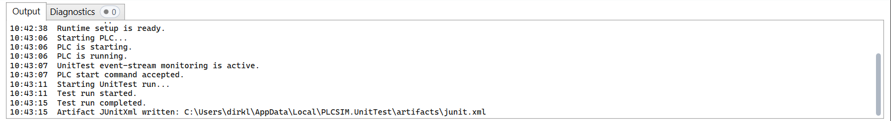
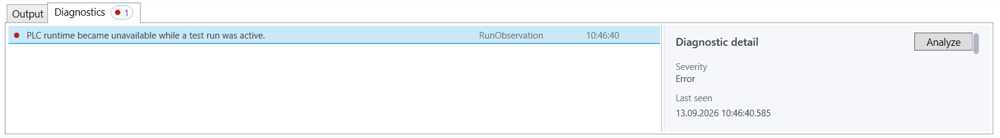

Process status
The application deliberately separates process state into badges rather than presenting one combined ready/error flag.
| Badge | Meaning |
|---|---|
| Runtime Setup | Whether the runtime target is configured, prepared, or has received a transferred project. |
| PLC | The observed PLC operating state, independent of who requested the transition. |
| Communication | The trust state of the shared UnitTest communication session. |
| Event Stream Monitor | Whether event observation is off, active, revalidating, or invalid. |
| Run Control | Observed UnitTest lifecycle readiness and activity. |

Revalidating means established communication became temporarily stale. Relevant controls remain gated until trust returns or the revalidation deadline invalidates the session.
Active session context
The bottom status line shows which profile, project, PLC, and runtime the current session refers to. Activity reports the currently executing bounded workflow action.
Output and diagnostics
Output
Output is the chronological operator-facing stream for discovery, setup, commands, cleanup, diagnostics, and artifact creation.

Diagnostics
Diagnostics retain structured warnings and errors until cleared. Select an entry to inspect severity, code, source, phase, technical detail, evidence reference, and correlation.

Analysis
Analysis turns retained structured evidence into a focused diagnostic report. Open the analysis related to a selected diagnostic, or continue with Evidence analysis for the three analysis types, report contents, and export workflow.
Menus and common actions
| Location | Actions |
|---|---|
| View | Clear the Run Result, Output, or Diagnostics; open the latest result artifact or output folder; start Run, PLC Lifecycle, or Communication Health analysis. |
| Tools | Refresh profile registrations, reconnect runtime access, or open application settings. |
| Help > Logs | Open the current application log, access-profile log, or shared log folder. |
| Run Result | Analyze the current or latest RunEpoch directly from the panel header. |
| Diagnostics | Analyze evidence related to the selected entry, copy one or all diagnostics, or clear the list. |
Recovery paths
| Situation | Preferred action |
|---|---|
| Communication is temporarily revalidating | Wait for recovery; controls remain gated. |
| Communication is invalid but the runtime target remains prepared | Reconnect Runtime. |
| Event Stream Monitor is active with lost-event evidence | Finish inspecting the affected result, then use Reset Event Buffer and wait for a clean observation before starting another run. |
| EventBuffer reset is accepted but the warning remains | Wait for PLC processing and another observation. If the state does not recover, inspect Output, Diagnostics, and PLC-side EventBuffer handling. |
| Wrong profile configuration | Back to Step 3. |
| Wrong PLC or runtime target | Back to Step 2. |
| Project/profile context must be replaced | Back to Step 1 or End Session. |
| Normal controls are blocked after a fatal profile failure | Back or End Session. |
| Structured analysis is insufficient for an API, IPC, or worker failure | Open the Access Profile Log and perform a focused raw-logging reproduction if required. |
Operation cancellation
Cancel interrupts the active operation, not automatically the complete profile session. The resulting step and enabled navigation indicate whether the action can be retried or setup must be released.
Session cleanup and application exit
File > End Session is the global cleanup route and remains available when normal workflow actions are blocked. Closing the application with an active setup requests confirmation and uses the same owner-driven cleanup boundary.